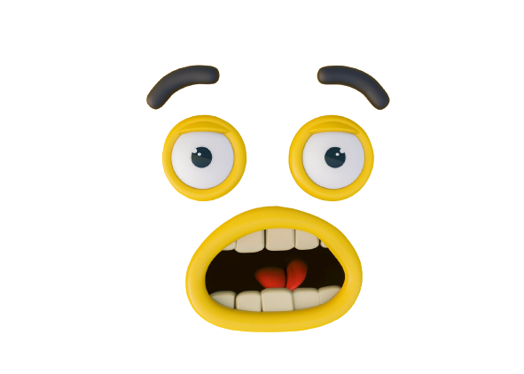

Previous
Your browser does not support the audio element.
Let's Learn "Emotion" !!

This emotion is
Shock
The "surprised" emotion can include wide-open eyes, raised eyebrows, and an open mouth. It indicates feelings of astonishment, shock, or sudden awareness.
Click here for quiz